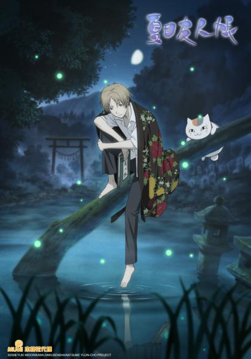

夏目友人帳
劇情介紹
高中生夏目貴志有靈異體質，能看見別人所看不到的。當他得到祖母玲子的遺物「友人帳」之後，不論白天或晚上，開始有各式各樣的妖怪紛紛找上門！ 原來玲子也和貴志一樣有靈異體質，大家都對她敬而遠之。玲子因為十分寂寞，便到處向妖怪下戰書，並要戰敗的妖怪交出名字，訂立服從的契約。而貴志拿到的，正是這本寫有眾多妖怪名字，能夠號令百妖，力量引人覬覦的「友人帳」！ 貴志在得知事情原委之後，決心要將「友人帳」上的名字一一還給被玲子擊敗的妖怪。而想要不費吹灰之力拿到友人帳的妖怪「貓咪老師」，則自願當保鑣，保護貴志和「友人帳」，共同踏上妖怪之旅！